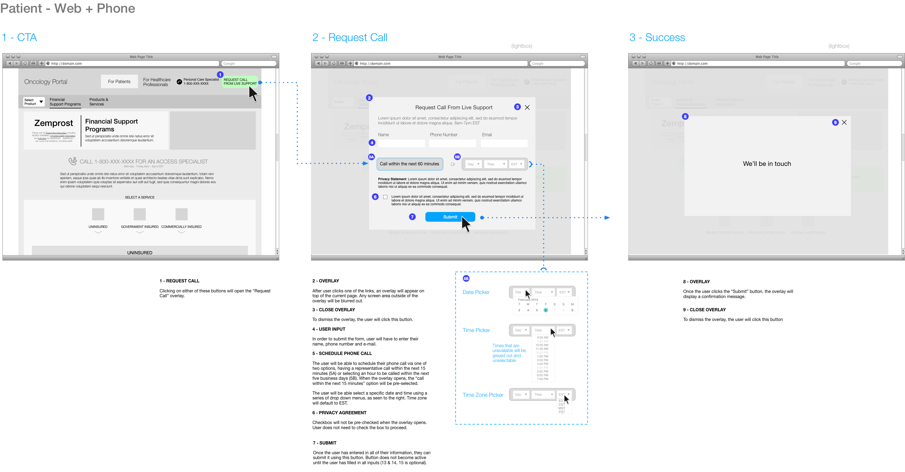

Oncology Treatment Support Portal
In 2017, a national pharmaceutical company launched a new support program for patients using their oncology treatments. Patients would be paired with dedicated counselors, who would assist them over the phone with finding resources for financial assistance, emotional support and other day-to-day challenges of having cancer, such as finding transportation or lodging when receiving out of town treatment.
Patients and Purpose was tasked with creating a website for the program that would educate patients, caregivers and healthcare professionals and provide multiple ways to simply and quickly sign up for the program. The site would also provide users with access to information about treatment, as well as forms and resources necessary for financial reimbursement.
Role
- Developed persona flows and customer touchpoints, identifying our users and determining how they would be reaching our site.
- Created sitemaps and wireframes for separate patient and healthcare provider experiences
- Outlined an approach for a progressive registration system
- Researched and designed approaches for integrating chatbots into the site, specifically for user registration purposes.
UX Challenges
Progressive Registration
Initially, the client saw user registration as an all or nothing proposition. If patients wanted access to any of the program’s features, from periodic informational e-mails, all the way to access to a personal telephone concierge, they would need to fill out a lengthy form that required not only personal contact information, but also particulars about their cancer diagnosis and treatment. We realized quickly that this would be a heavy burden on the user and greatly decrease the chances that they would sign-up for anything at all.
In response, we created a progressive registration system, where users would be able to engage with the program at the level that they wanted and only have to provide the necessary amount of information. There were three levels;
- Registration - Access to periodic e-mails with treatment tips and financial support options
- Registration + Co-Pay Card – Access to resources and ability to manage co-pay cards
- Concierge Care – Access to a concierge who’s familiar with patient’s history and can assist them over the phone

Diagram of the steps of progressive registration, showing the amount of personal information that a user would have to provide for each level of the program.
Users could join any level at any time. If they wanted to increase their engagement with the program, they would pick-up the registration process from where they left it and not have to re-enter any data, only updating their profile with the necessary information. This made it easier for users to increase their engagement over time, as they didn’t have to repeat any steps during the process.
Multiple Ways to Sign Up
Dealing with cancer is obviously a stressful situation, so we wanted to make our users as comfort as possible with registration. In addition to web sign-up, we offered a toll-free phone number that users could call so that they could ask any questions they wanted before joining the program. Representatives would then be able to sign them up over the phone.
However, calling customer support creates extra friction for users, as they might be wary of having to wait on hold for an unknown amount of time. To ease this concern, we created a third option. Prominently displayed in the header of every page, a callout invited users to request a call from a representative in as little as an hour simply by providing their name and telephone number.

Wireframes for steps